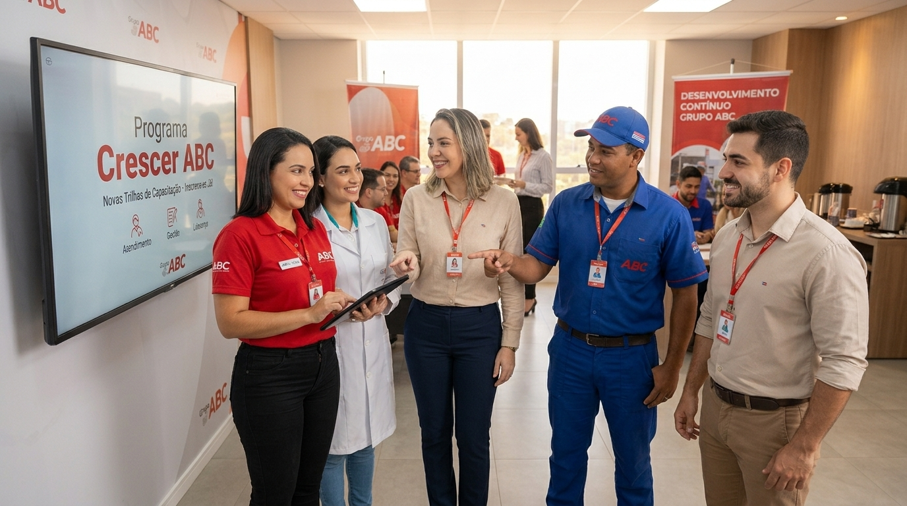
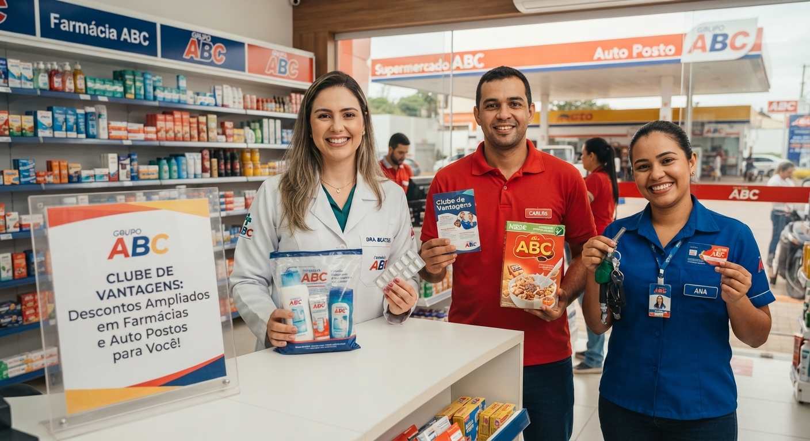

Notícias ABC

Programa "Crescer ABC" abre inscrições para novas trilhas de capacitação
A partir desta semana, colaboradores dos supermercados, farmácias, auto postos e da matriz administrativa já podem se inscrever nos novos módulos de treinamento disponíveis diretamente no portal. A iniciativa oferece cursos rápidos, 100% gratuitos e com certificado, abrangendo temas como excelência no atendimento, gestão de tempo, liderança e ferramentas digitais. Além de apoiar o desenvolvimento pessoal, a conclusão das trilhas conta pontos extras nos processos de recrutamento interno para novas oportunidades de carreira dentro do Grupo ABC.

Clube de Vantagens amplia benefícios nas Farmácias e Auto Postos do Grupo
Pensando na economia e no bem-estar diário da nossa equipe, o pacote de benefícios internos ganhou novidades importantes a partir deste mês. Agora, além das facilidades já existentes nas compras de supermercado, todos os profissionais ativos passam a contar com descontos ampliados em medicamentos e perfumaria nas Farmácias ABC, além de condições especiais no abastecimento e serviços dos nossos Auto Postos. Para utilizar o benefício, basta apresentar o cartão digital do colaborador no portal ou informar o CPF no momento do pagamento.
Prêmio "Prata da Casa" reconhece os destaques em atendimento do último trimestre
O empenho de quem transforma a rotina das nossas unidades foi celebrado na edição mais recente do Prêmio Prata da Casa, que homenageou profissionais que se destacaram pelo espírito de equipe e pelos elogios recebidos de clientes e colegas. Nesta rodada, foram premiados representantes dos setores de frente de caixa, pista de abastecimento, atendimento farmacêutico e suporte administrativo. Os ganhadores participaram de um café especial com a diretoria e receberam certificados e vales-compra; a galeria com os nomes e as fotos da entrega já está disponível na aba "Comunidade".
Semana de Saúde e Qualidade de Vida leva ações preventivas a todas as unidades
Entre os dias 10 e 14 do próximo mês, o Grupo ABC promove uma programação especial voltada para o cuidado físico e o equilíbrio emocional no ambiente de trabalho. As atividades foram adaptadas para a rotina de cada operação — da reposição de mercadorias ao escritório — e incluem sessões de ginástica laboral, aferição de pressão arterial, orientações sobre ergonomia e bate-papos com nutricionistas e psicólogos. A participação acontece durante o expediente em horários escalonados, e quem marcar presença nas ações concorre ao sorteio de kits de bem-estar.